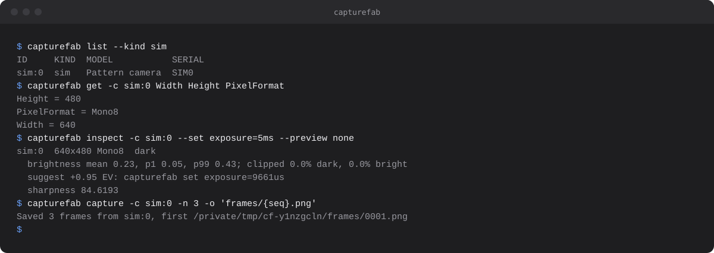

Capturefab
Capturefab
Measure before you capture
inspect measures exposure, clipping and focus on a fresh frame, suggests an exposure and writes a small preview.
Free, open-source (MIT) camera capture CLI
One capturefab command finds, configures, captures from and records GigE Vision and USB3 Vision cameras, webcams, RTSP/ONVIF streams and files. Every command can print one JSON document with a typed exit code, so an agent drives a camera in a few calls.
curl -fsSL https://capturefab.com/install.sh | shFree and open source (MIT). macOS, Windows and Linux. See an agent session
capturefab schema for agents.
Camera support depends on the device, connection and operating system. Read the camera requirements →
Built for agents
Claude Code, Codex and other agents that run shell commands use Capturefab as it is. schema describes every command; each result is one JSON document; the exit code and error.code say what to do next.
# Not installed? Use the one-line installer above, or ./capturefab (.\capturefab.exe on Windows) from the extracted folder.
capturefab schema
capturefab list --json
capturefab inspect --json -c sim:0 --preview none
capturefab capture --json -c sim:0 -o 'shots/{seq}.png'# capturefab inspect --json -c sim:0 \
# --set exposure=1ms --preview none
{"camera":"sim:0",
"exposure":{"clipped_high":0.0,"clipped_low":0.0043,
"mean":0.0446,"p1":0.004,"p50":0.046,"p99":0.0893},
"focus":{"sharpness":4.3685},
"frame":{"age_ms":13,"bits":8,"height":480,
"pixel_format":"Mono8","width":640},
"settings":{"exposure_us":1000.0,"fps":30.0,
"gain_db":0.0,"pixel_format":"Mono8"},
"suggest":{"ev":3.32,"exposure_us":10000.0},
"verdict":["dark"]}
# capturefab set --json -c sim:0 ExposureTime=1h
# exit 2
{"error":{"code":"out_of_range",
"details":{"feature":"ExposureTime","max":1000000,
"min":10,"nearest":1000000.0,"unit":"us",
"value":3600000000},
"hint":"the nearest accepted value is 1000000.0",
"message":"cannot set ExposureTime to \"3600000000\": ExposureTime violates Max=1000000; enter 1000000 or less"}}What it does
Each command does one job well and reports exactly what happened.
inspect measures exposure, clipping and focus on a fresh frame, suggests an exposure and writes a small preview.
set writes several values as one change, in a valid order, and puts every value back if one fails. Portable controls work across vendors.
Single frames, bursts, time lapses and triggered captures; H.264, HEVC, AV1 or lossless FFV1 video to files or streams. Files are never overwritten.
Capture imagesRecord video--keep 5m keeps a camera open between calls; --background runs long captures and recordings as jobs; serve runs a session under systemd.
Try it without a camera
The built-in simulator camera sim:0 supplies test images, so you can learn the commands or test a script before you connect hardware.
Run the one-line installer, or download the archive for your system and put capturefab on your PATH.
Run the commands beside this list. Each one prints what it did; add --json for a JSON document.
Run capturefab list and replace sim:0 with your camera's ID.
# Not installed? Use the one-line installer above, or ./capturefab (.\capturefab.exe on Windows) from the extracted folder.
# List the simulator camera
capturefab list --kind sim
# What it is and what it can do
capturefab info -c sim:0
# Save an image; run it again for first-0002.png
capturefab capture -c sim:0 -o 'first-{seq}.png'
# Measure exposure and focus
capturefab inspect -c sim:0Get Capturefab
Free. No account. One executable with FFmpeg built in.
Latest release: see all downloads
Choose your operating system and processor.
Published downloads
Select a build, or open all downloads below.
Run this in a terminal. It prints OK on macOS and Linux, or OK: checksum matches on Windows. If your browser saved the file in another folder or renamed it, change the folder or name.
One command picks the build for this computer, checks its SHA-256 and installs it for your account, without sudo or administrator rights.
curl -fsSL https://capturefab.com/install.sh | shirm https://capturefab.com/install.ps1 | iexThe first line is for macOS and Linux, the second for Windows PowerShell. To read the script first: curl -fsSLO https://capturefab.com/install.sh; less install.sh; sh install.sh. Read install.sh or install.ps1.
Capture with clear limits
Each camera runs in a separate worker process, so one camera's driver cannot take the others down. Every command reports what it did, or exactly why it could not.
Read about the architecture →{seq} name new files.set and preset changes apply as one change and put every value back on failure.GigE Vision and USB3 Vision (GenICam) cameras, webcams and capture cards, RTSP, SRT and ONVIF streams, and video files. Support depends on the device and operating system; this is an early implementation with less coverage than some vendor SDKs. Read the camera requirements and limits.
No. Downloads include FFmpeg for webcams, streams and video. You need the operating system's camera and USB drivers. USB3 Vision cameras on Windows must use WinUSB; the first-use steps say how. Read the installation instructions.
Through the shell, like any command-line tool. Give your agent agents.md or let it run capturefab schema. Results are JSON, exit codes are typed, and each error has a code and a hint. Your agent decides what its model sees.
If a Windows download is listed as Unsigned, Microsoft Defender SmartScreen may warn the first time you run capturefab.exe. Check the SHA-256 checksum first, then choose More info → Run anyway, or use the PowerShell installer. The download list shows each file's signature.
Run capturefab doctor. It checks FFmpeg, folders, GigE adapters and, on Linux, USB and network limits, and prints a fix for each warning. Read the checks and the troubleshooting guide.
Yes. Capturefab uses the MIT license. The separate FFmpeg executable uses GPLv3. Each release includes the corresponding source and license notices. Read the licensing details before redistribution.
Capturefab is now a command-line tool. Version 0.5.0 and earlier included a desktop app; keep 0.5.0 to go on using it. Read upgrading from the desktop app.
The download selector shows a command with the file name and its SHA-256 filled in. Run it in your Downloads folder: it prints OK when the file matches. The install script checks the checksum before it installs anything. You can verify GitHub build provenance with gh attestation verify FILE --repo capturefab/capturefab.
Use a stable Rust toolchain, a C compiler and CMake. For x86 builds, NASM is also necessary for libjpeg-turbo. FFmpeg is necessary for webcams, streams and recording. Download the source code of a release. It includes every Rust dependency, so the build works offline. Read the FFmpeg build guide for configuration.
tar -xzf capturefab-VERSION-source.tar.gz
cd capturefab-VERSION
cargo --config .cargo/vendor-config.toml build --release --offline --locked
target/release/capturefab capture -c sim:0 -o first.png